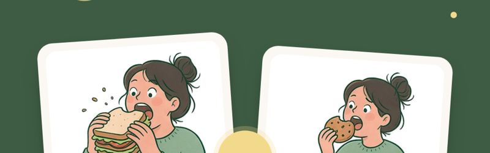
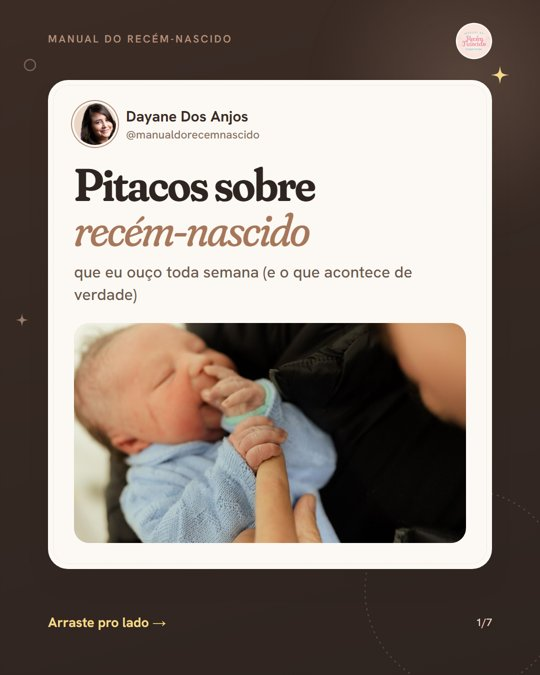
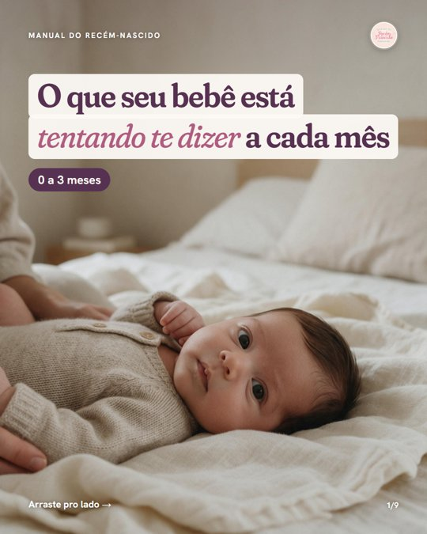
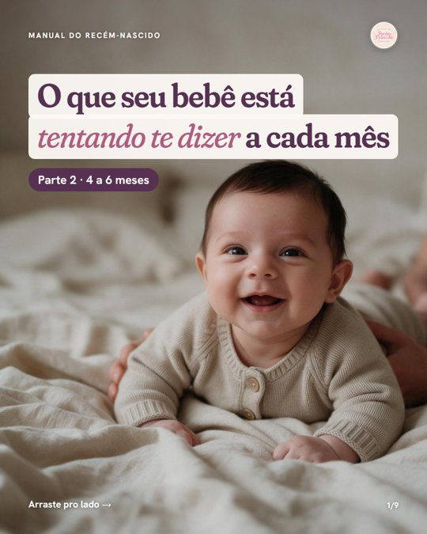

Carrosséis prontos pra Day ver
7 aguardando a day. Cada um abre com as lâminas e a legenda. Aprovado entra no Publicador às 20h, 1 por dia.

Tummy time em cada fase
Técnico · template guia por fase · 8 lâminas · legenda pronta
Ver lâminas e legenda →
Qual é mais forte? Gravidez × maternidade
Humor · template versus · 8 lâminas · legenda pronta
Ver lâminas e legenda →Vacinas do 1º ano, mês a mês
Salvável · template calendário · 6 lâminas · legenda pronta
Só orgânico, não impulsionar (tema de saúde checado pela Meta).
Ver lâminas e legenda →
Pitacos sobre recém-nascido
Identificação · template pitaco · 7 lâminas · legenda pronta
Ver lâminas e legenda →A boneca na maternidade real
Humor · template meme sobre foto · 7 lâminas · legenda pronta
Ver lâminas e legenda →
O que seu bebê está tentando te dizer (0 a 3 meses)
Educativo · template voz do bebê · 9 lâminas · legenda pronta
Fecha com "comenta PARTE 2": a parte 2 já está pronta, postar depois desta.
Ver lâminas e legenda →
O que seu bebê está tentando te dizer: parte 2 (4 a 6 meses)
Educativo · template voz do bebê · 9 lâminas · legenda pronta
Postar depois da parte 1 (ela promete a parte 2).
Ver lâminas e legenda →